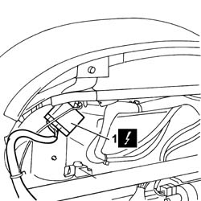
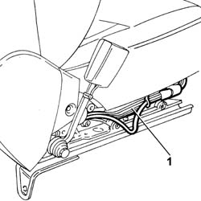
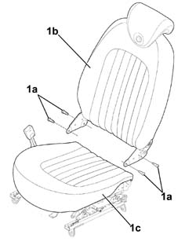
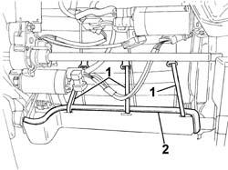
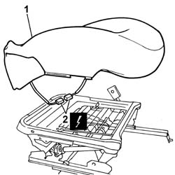
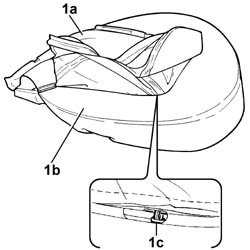
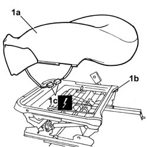
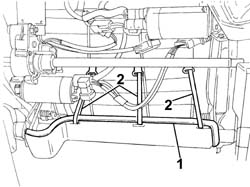

7045D21 Left or right front seat cushion cover - R.R. with seat removed
- Path
- Procedures > 70 FITTINGS > 7045 FRONT SEATS > 7045D RIVESTIMENTO/IMBOTTITURA SEDILI ANTERIORI > 7045D21 Left or right front seat cushion cover - R.R. with seat removed
- Kind
- repair procedure (removal / refitting; the operation number is the code)
- Applies to
- all engines; all production periods
- Interactive page
- https://sloeber94.github.io/elrnDB-lThss/en/#/194785
Applies to: all engines; all production periods
 Removing
Removing
 Refitting
Refitting1. Disconnect the electrical connector between the backrest wiring and the cushion wiring.

Applies to: all engines; all production periods
1. Release the section of the backrest wiring, located under the cushion, from the retaining springs and release it from the housing.

Applies to: all engines; all production periods
See in Op. 7045J10 switch unit for movement of one front seat, l/h or r/h - r+r for check
See in Op. 7045A42 Front seat GUARD (one), left or right - R.R.
- < R1 > [all the elements]
1. Undo the fixing bolts (1a) and separate the backrest assembly (1b) from the cushion (1c).

Applies to: all engines; all production periods
1. Release the flexible retainers.
2. Release the entire cover surround, starting from one side.

Applies to: all engines; all production periods
1. Separate the cushion assembly (1a) from the guide supports (1b).
2. Disconnect the electrical connector for the passenger sensor.
Applies to: all engines; all production periods
- Disconnect the electrical connector for the seat heating device.

Applies to: all engines; all production periods
1. Separate the cover (1a) from the upholstery (1b), removing the retaining seals (1c) using the nippers.

Applies to: all engines; all production periods
Refitting
Removing- Check that the upholstery and the cover are not damaged.
1. Fit the cover (1a) on the upholstery (1b) and secure it using new retaining seals (1c) using the special tool.
 | Description | Code | Function |
|---|---|---|---|
. | Pliers for metal points | 1.878.017.001 | Fastening cover to upholstery |
Applies to: all engines; all production periods
- Mould the cover onto the upholstery.
1. Fit the cushion assembly (1a) on the support/guides (1b), after having connected the electrical connector for the passenger sensor (1c).
Applies to: all engines; all production periods
- Connect the electrical connector for the seat heating device.

Applies to: all engines; all production periods
1. Fit the entire cover surround.
2. Attach the flexible retainers.

Applies to: all engines; all production periods
- Assembly the backrest assembly to the cushion and secure them using the fixing bolts.
See in Op. 7045A42 Front seat GUARD (one), left or right - R.R.
- < R1 > [all the elements]
See in Op. 7045J10 switch unit for movement of one front seat, l/h or r/h - r+r for check
- Renew the section of electrical wiring for the backrest, located under the seat cushion, and secure it to the retaining springs.
- Connect the electrical connector between the backrest wiring and the cushion wiring.
Topics linked from this page (2)
- 7045A42 Front seat GUARD (one), left or right - R.R.
- 7045J10 switch unit for movement of one front seat, l/h or r/h - r+r for check